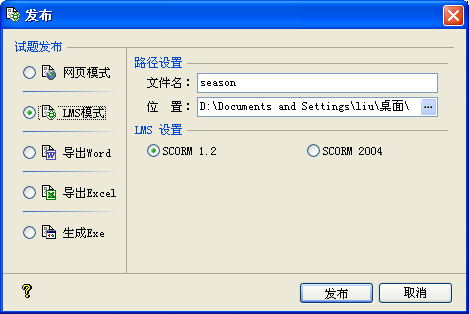

| 试题发布 - LMS模式 |
|
LMS发布模式页面如下图所示：  此种模式，试题大师将在指定位置生成一个设定文件名的zip格式的SCO课件，它能为LMS所载入。 Ø 路径设置 文件名：您可以设定所要输出的文件名，默认为当前工程名。需要注意的是，它不支持非法的文件名字符如*、?、<、>等。 位置：此处设置您要输出文件的位置，它会记录最后一次设定的位置，作为新建试题的初始设置。 Ø LMS设置 SCO课件支持两种SCORM标准：SCORM 1.2和SCORM 2004，您可以选择所需要的SCORM标准进行发布。 此两种标准之异同，请参考相关资料；更多信息，请访问http://www.adlnet.gov网站。 |